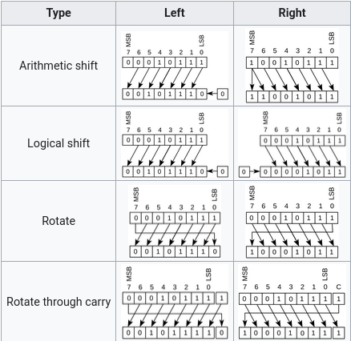

- And only 1 required gate to build all other gates:
0x7ffcf5171838 │ 32
0x7ffcf5171840 │ 52
0x7ffcf517183c │ 203
| Binary | Octal |
|---|---|
110100001010
|
6412$_8$
|
| 000$_2$ | 0$_8$ |
| 001$_2$ | 1$_8$ |
| 010$_2$ | 2$_8$ |
| 011$_2$ | 3$_8$ |
| 011$_2$ | 3$_8$ |
| 100$_2$ | 4$_8$ |
| 101$_2$ | 5$_8$ |
| 110$_2$ | 6$_8$ |
| 111$_2$ | 7$_8$ |
Octal has a radix of 8, which is $2^3$
| Binary | Hexadecimal |
|---|---|
110100001010
|
D0A$_{16}$
|
| 0000$_2$ | 0$_{16}$ |
| 0001$_2$ | 1$_{16}$ |
| 0010$_2$ | 2$_{16}$ |
| 0011$_2$ | 3$_{16}$ |
| 0011$_2$ | 3$_{16}$ |
| 0100$_2$ | 4$_{16}$ |
| 0101$_2$ | 5$_{16}$ |
| 0110$_2$ | 6$_{16}$ |
| 0111$_2$ | 7$_{16}$ |
| 1000$_2$ | 8$_{16}$ |
| 1001$_2$ | 9$_{16}$ |
| 1010$_2$ | 10$_{16}$ |
| 1011$_2$ | 11$_{16}$ |
| 1011$_2$ | 11$_{16}$ |
| 1100$_2$ | 12$_{16}$ |
| 1101$_2$ | 13$_{16}$ |
| 1110$_2$ | 14$_{16}$ |
| 1111$_2$ | 15$_{16}$ |
Hexadecimal has a radix of 16, which is $2^4$
Decimal numbers have a more involved process requiring repeat divisions to convert to and from binary.
function toBinary(n) {
out = "";
while (n != 0) {
out = `${n % 2}` + out;
n = Math.floor(n / 2);
}
return out;
}
function fromBinary(bin) {
let n = 0;
for (let i = bin.length - 1; i >= 0; i--) {
if (bin[bin.length - i - 1] == "1")
n += Math.pow(2, i);
}
return n;
}
| Binary | Unsigned Integer Representation | Signed Integer Representation |
|---|---|---|
| 11001010 | 202 | -54 |
| 01011010 | 90 | 90 |
| 10010110 | 150 | -106 |
-0 Ambiguity| Unsigned | $[0, 2^n-1]$ |
| Sign/Magnitude | $[-2^{n-1} + 1, 2^{n-1}-1]$ |
| 2's Complement | $[-2^{n-1}, 2^{n-1}-1]$ |
Binary arithmetic is handled by the ALU. Binary circuits are just logical circuits due to the simplicity of the number system.

2.46 = 01000000000111010111000010100100
01000000000111010111000010100100
1000000 = 128 - 127 = 1
the $2 \times$ section of the floating point is implicitly implied
01000000000111010111000010100100
01000000000111010111000010100100
1.000111010111000010100100
1.0 is implied, not physically stored.
Denormalized numbers instead uses 0.0.